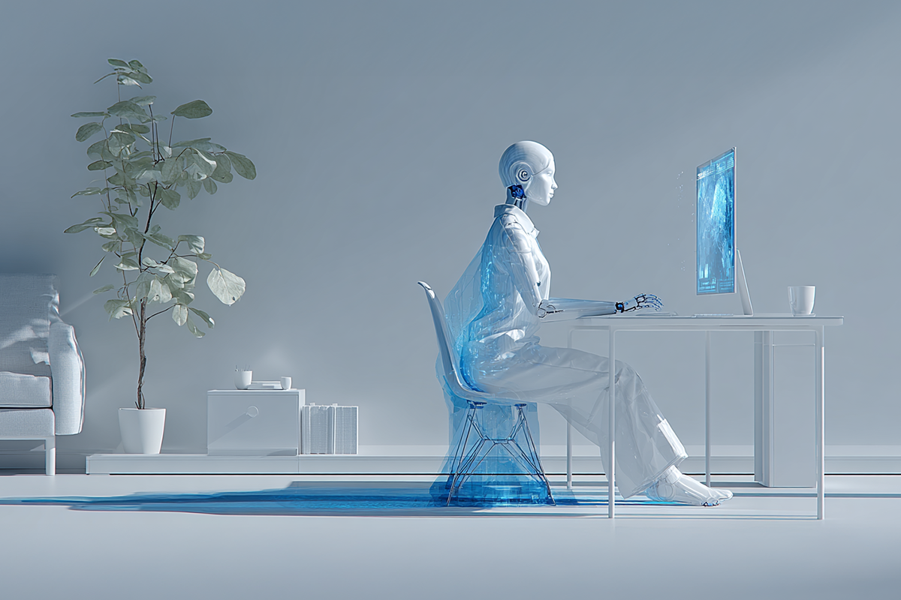
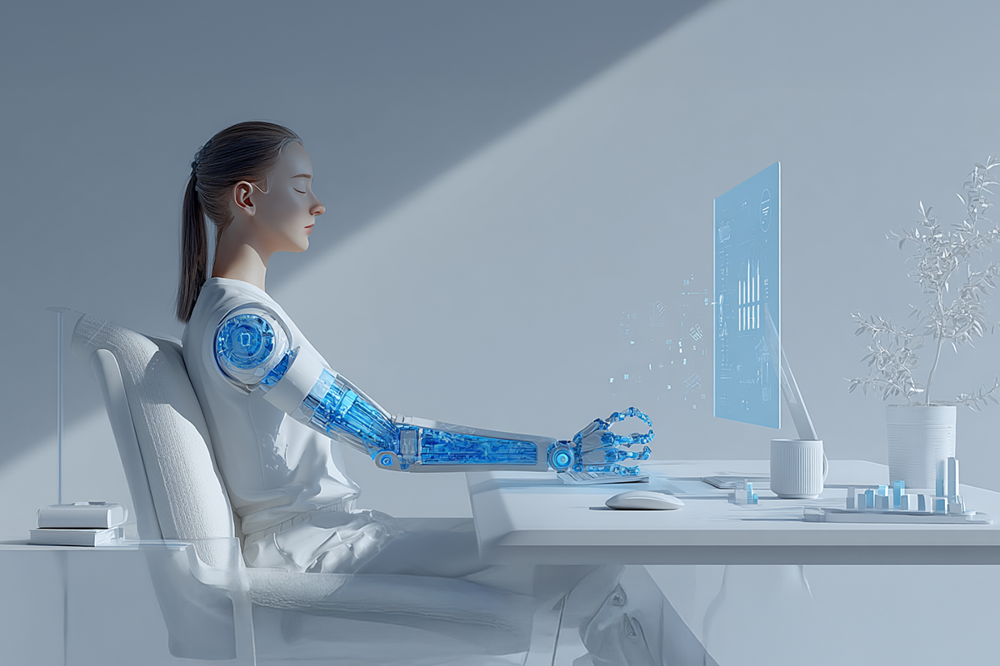
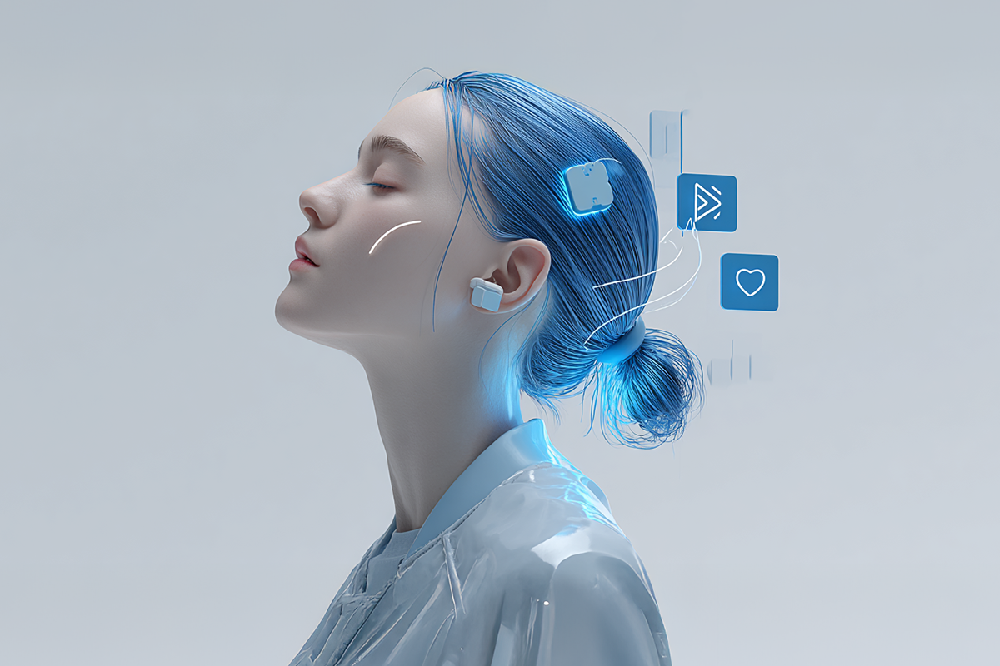

Chips cerebrales: suena extremo, pero no tanto
IA, salud y futuro cercano.
IA, salud y futuro cercano.

Durante años, la tecnología fue algo que cargábamos en el bolsillo o apoyábamos sobre la mesa: un celular, un reloj, un computador. Hoy, en 2026, Neuralink, empresa de Elon Musk, anuncia que comienza la producción masiva de chips cerebrales. Así que, prácticamente, lo que antes era laboratorio, ahora llega a la vida real.
Y cuando una tecnología entra al cuerpo, el impacto deja de ser solo técnico. Se vuelve profundamente humano.
Uno de los avances más comentados es Blindsight, un implante para personas con ceguera. Si bien no devuelve la visión como antes, permite reconocer luces, formas y movimientos. Es autonomía, independencia, posibilidad de decidir por uno mismo.
Lo mismo pasa con quienes hoy pueden mover prótesis robóticas, escribir en un computador o comunicarse solo con señales cerebrales. Para estas personas estos chips no son gadgets; son herramientas de vida.

El nombre de Elon Musk siempre genera ruido: admiración para algunos, desconfianza para otros. Pero lo cierto, es que cuando Musk entra a una industria, empuja los tiempos. Neuralink no habla de chips dentro de 30 años, sino de ahora: automatizar cirugías, producir a escala y hacer accesible lo que antes era impensado.
Esto abre oportunidades enormes y nuevas responsabilidades. Por eso, cuando la innovación avanza tan rápido, las preguntas llegan después: ¿cómo se regula? ¿cómo se protege? ¿qué pasa si algo falla?

Si alguien depende de un chip para ver, moverse o comunicarse, este dispositivo pasa a formar parte de su bienestar y su independencia. Y aquí aparece una idea clave: hoy hablamos de seguros de vida, salud o invalidez; mañana podríamos hablar de seguros que incluyan tecnología médica avanzada, como implantes neuronales. No desde el miedo, sino desde la lógica de anticiparse y proteger lo que nos importa.

Hablar de chips cerebrales no es imaginar humanos “mejorados”, sino personas que recuperan funciones y calidad de vida. Entender este cambio implica también aprender a tomar decisiones informadas: anticiparse, comparar y elegir la mejor opción. Exactamente lo mismo que hacemos hoy con los seguros, las asistencias o la salud en ComparaOnline.
El futuro no llega de golpe. Llega persona por persona, y para muchos, ya empezó.
 Tecnología
TecnologíaSi eres como yo y revisas TikTok e Instagram constantemente, te habrás dado cuenta de que estas redes son casi como un experimento social.
 Tecnología
TecnologíaHablamos mucho de inteligencia artificial. La tenemos integrada en nuestra vida, nos ayuda en nuestros trabajos y le preguntamos cosas de…
 Tecnología
TecnologíaDurante años hemos pensado en la inteligencia artificial como algo súper frío: servidores gigantes, computadores procesando datos y…